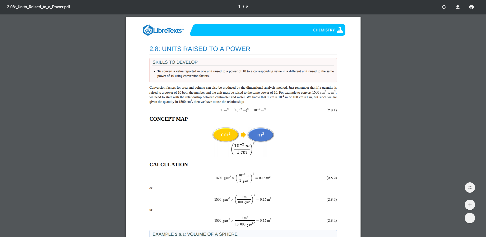

Unlike traditional textbooks or even ebooks, LibreText's web-based origins allow powerful integration of advanced features. LibreTexts prides itself in embracing new technologies to enhance student engagement, as content can be so much more than just text and images. These advanced features are available to all LibreTexts. It is up to instructors to decide which ones are the best fit for their classes.
In addition to the integrations that we have already implemented, we are continuously adding new features to expand the capabilities of LibreTexts and to integrate with existing technologies at institutions such as their Learning Management Systems. Wishing for a feature that we haven't thought of yet? Don't be afraid to suggest a feature!
Interactive videos are a simple, yet effective way to make your content feel more dynamic. Whether you chose to embed an existing video or make your own, interactive videos are a great way to present and visualize even the most complex topics.
Sometimes text and still images just aren't enough to model our 3D world. With dynamic figures, students can manipulate 3D objects in order to get a new perspective and understanding. Our embedded molecular viewers allow for the interactive visualization of proteins and molecules, while CalcPlot3D gives shape to a whole new dimension of mathematics.
With Jupyter, code can be embedded right into the page for students to try. Supporting many popular languages such as Python, R, and Octave, Jupyter in LibreTexts can turn a few lines of code into a dynamic illustration of concepts in action. LibreTexts is also exploring the possibility of hosting dedicated computational resources to cover the needs of more data-intensive courses.
%%python3
import urllib.request
fhand = urllib.request.urlopen('http://data.pr4e.org/romeo.txt')
for line in fhand:
print(line.decode().strip())
# Code: http://www.py4e.com/code3/urllib1.py
Hypothesis is a annotation overlay that allows for both public and class-based collaboration. Some courses use this as a contextual discussion forum to ask clarifying questions or to highlight the most important content.
If you like having something tangible to study off of, every page has an option to download and print a PDF version. This is a great alternative for the classroom if you want to limit the usage of electronic devices in class or if you have exercises for students to work out on paper.
Want an entire LibreText as a physical copy? LibreTexts is planning on expanding its print system such that you can request a full LibreText to print yourself or with a non-profit partner. This static version lacks the advanced features and always up-to-date nature of the actual website. Still, this version of a LibreText provides ultimate portability for those that want to retain the feel of a traditional textbook.
Using the LTI Common Cartridge system, it is possible to import a LibreText into your new course as a set of links. The common cartridge system is compatible with common LMS software such as Canvas, D2L, Moodle, and Blackboard. This is speedy for setting up assigned or recommended readings without having to manually copy over the links. For a more dynamic integration into the LMS, see our plan for Deep LMS Integration below
The Online Education Initiative (OEI) is a collaborative effort among California Community Colleges (CCCs) to ensure that significantly more students are able to complete their educational goals by increasing both access to and success in high-quality online courses. After our review process is complete, Instructors will be able to select LibreTexts that conform to OEI accessibility standards and rubric directly from Canvas Commons. OEI is quickly expanding to include many of the California Community Colleges, and it takes place in Canvas, which means that an estimated hundreds of thousands of students will be taking Canvas courses through OEI in the next few years.
LibreTexts is planning on using Tsugi to allow increased interoperability with common LMS software such as Canvas, D2L, Moodle, and Blackboard. LibreTexts will be able to update course modules synchronously in the LMS as they are changed by the instructor and reporting grades from assessment modules. Our vision is for LibreTexts to utilize this integration with your LMS to evolve from just a content platform into a complete hub for student learning and assessment.
WeBWork is a popular homework problems platform for assessing student performance. WeBWork and other assessment platforms can be directly embedded within the course content to keep students accountable for understanding the content. The integration of LibreTexts with Learning Management Systems will then allow for the results to be integrated automatically back into your LMS, providing an all-in-one solution.
Adapting an existing LibreText allows for the freedom to shape the course content without having to start from scratch. With Imported eTextbooks, LibreTexts can integrate external Open Textbook content from other sites such as from Pressbooks and allow for customization and stronger integrations. To respect and comply with licensing and copyright protections, only content with a CC BY-NC-SA, equivalent, or less restrictive license will be imported.